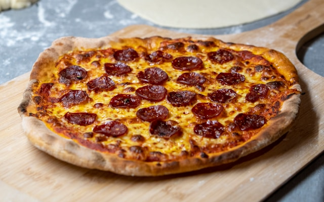

Home
Homemade Pepperoni Pizza

A freshly made pizza, right at the comfort of your own home!
Crust, cheese, pepperoni, and sauce, oh my! This will surely beat whatever frozen pizza you buy for $5 at the
grocery
store.
Note: this recipe will yield TWO 12-inch pizzas. Adjust as needed for fewer or more pizzas.
-
Sauce Ingredients
- 1/2 cup water
- 12 ounce contadina tomato paste
- 1 tsp dried crushed oregano
- 1 tsp dried crushed basil
- 1/2 tsp garlic powder
- 1/2 tsp onion powder
- 1/2 tsp sugar
- 1/2 tsp salt
- 1/4 tsp black pepper
-
Crust Ingredients
- 3 1/4 cups all-purpose flour, or more as needed
- 2 (0.25 oz) envelopes RapidRise Yeast
- 1 tbsp sugar
- 1 1/2 tsp salt
- 1 1/3 cup very warm water (120-130 degrees F)
- 1/3 cup oil
-
Toppings
- 1 cup shreeded mozzarella cheese, or more to taste
- 6 oz. Hormel Pepperoni
-
Steps
- Preheat the oven to 425 degrees F (220 degrees C). Grease two 12-inch pizza pans.
- Make sauce: Whisk together water, tomato paste, oregano, basil, garlic powder,
onion powder, sugar,
salt, and pepper in a medium bowl until smooth. Set aside.
- Make crust: Combine 2 cups flour, yeast, sugar, and salt in a large bowl. Add warm
water and oil;
mix until well blended, about 1 minute. Gradually add remaining flour, a little at a time, until a
soft, sticky dough forms.
- Transfer dough to a floured surface; knead until dough is smooth and elastic, about 4 minutes. Add
more flour as needed. (If using RapidRise yeast, let dough rest, covered, for 10 minutes.)
- Divide dough in half. Lightly flour your hands, then pat each piece of dough onto the prepared pizza
pans.
- Top dough with sauce, cheese, and pepperoni.
- Bake in the preheated oven until crusts are browned and cheese is bubbly, 18 to 20 minutes. Rotate
pizza pans between the top and bottom oven racks halfway through baking.